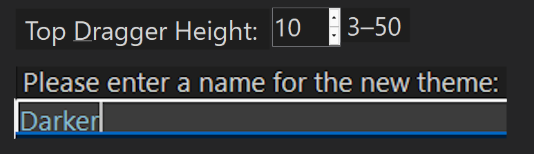

Here are some thoughts on how I make an application more Dragon–friendly…
Modal Dialogs
Concerns
Dragon frequently fails to work perfectly with modal (blocking) dialogs (e.g. the MessageBox when it contains more than “OK” or “Yes”/“No” — it and sometimes even then; built–in color and font pickers; “Options”/“Preferences” dialogs etc.) This is especially true when such a modal dialog has more extensive Controls than just a few Buttons — a Menu, CheckBoxes, RadioButtons, ComboBoxes etc..
Solutions
Panel Overlay
Simplest solution is to create a Panel, typically centered on the Form (or its Client Area), and add it directly to the Form’s Controls. You might need to use some combination of BringToFront() and Show() to achieve the best results — especially if the Panel’s Controls are complex. You might also need to deal with (temporarily) resizing the Form if the created panel is too large to fit.
Draggable Panel
A more complex solution is to create a DraggablePanel. In general this is similar to creating an overlay panel; the class is included and used in DBCode.
Truly Modal
A more complex solution is to create a separate application with its own Form. This involves creating a method whereby the two applications communicate with each other.
Both Panel–based solutions and the truly modal Form–based solution often work best when the rest of the GUI is disabled. The easiest method that I have found for doing this is to put literally everything — Menu, BottomPanel (StatusBar) and all other Controls in a scrollable Panel which is itself added exclusively to the Form’s Controls. This makes it easy to disable or even remove (temporarily) the scrollable Panel while the simulated modal Panel is in place. This also means that the Form has AutoScroll turned off.
Activating Controls
Clickable Controls
Menu items are probably the most Dragon–friendly Controls. Top–level Menu item should have Clearly distinct, dissimilar Text each of which should be easy to pronounce (the programmer should dictate these to ensure that Dragon is comfortable with the Text string). The same is true for all children, grandchildren etc. — they should be easy to dictate, dissimilar from top–level menu items and all other exposed items. It’s always a good idea to give these Text strings accelerator keys and, where possible, keyboard shortcuts.
Strangely, even if a menu item is disabled and/or hidden Dragon can still “click” it. The same is true for exercising its keyboard shortcut. The only reliable way to ensure that Dragon cannot “click” a menu item is to physically remove it. Unfortunately, doing so also causes problems if the programmer wants to re–add the menu item. It would seem that Dragon only scans the menu once, when it is first displayed and thereafter, only sporadically. It frequently fails to see a re–added item.
Buttons, CheckBoxes and RadioButtons
Buttons, CheckBoxes and RadioButtons are probably almost as Dragon–friendly as menu items. The same constraints should be followed when creating their Text — make sure they are easy to dictate, distinctly dissimilar and, to be on the safe side try to always give them accelerator keys.
As with menus, it seems that Dragon only scans the Controls once, when they are first displayed and thereafter, only sporadically. It frequently fails to see a re–added Control.
Non–Clickable Controls
These are Controls like TextBoxes, RichTextBoxes, DataGridViews, NumericUpDowns and sliders (TrackBars) etc.. Dragon has no native facility for directly activating these (although careful assignment of TabIndexes can make it easier). In the image below, the NumericUpDown has a Prefix Button to its immediate left; the TextBox has a (rather long–winded) Prefix Button just above it.
The “Prefix Button” is a Button which has been “flattened” and looks like a Label. Its Text should always end with “:” to give a visual indication that it is a “Prefix Button”. It and its associated control, must always share sequential TabIndexes — with the Prefix Button’s index being the smaller. It should always be in the immediate vicinity of its associated control — typically immediately to the left, but occasionally just above.
